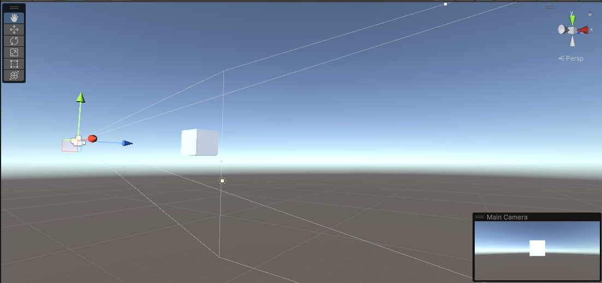
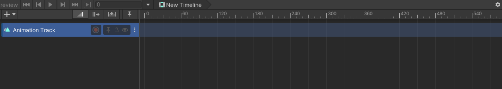
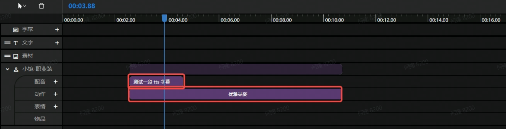
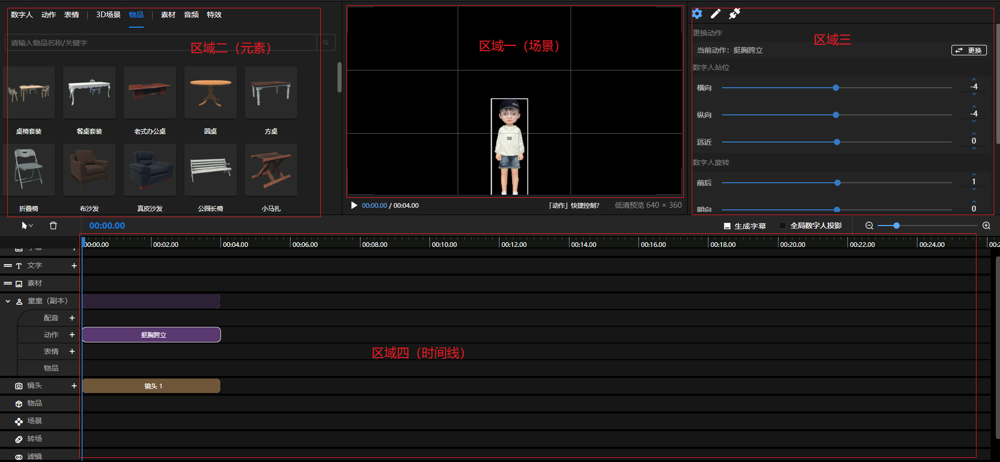

三维（3D）是在只有宽度和高度的平面二维系中又加入了一个深度而构成的空间坐标系

三维空间最基本的就是坐标系，空间坐标系比平面坐标系多了一个Z轴，只需XYZ的值就可以确定空间中的一点。常见的空间坐标系有两种，左手坐标系和右手坐标系。我们的SDK使用的是左手坐标系，如下图：
在图一：三维场景图中，可以看到物体上有三种不同颜色的箭头，红色代表X轴，绿色代表Y轴，蓝色代表Z轴，这三条轴组成了该物体的空间坐标系。
场景可以理解为一个空的无限大的容器，这个容器中有着一个你看不见的世界坐标原点以及三个坐标轴。你可以在场景里面放置一些对象，比如，相机，灯光，图形，模型等。
如图一：三维场景图所示，除去图中的相机、正方体、光照后，就是一种最初始的，什么都没有的场景。
屏幕上所看到的一切都是通过相机视角来展示的，而相机是附带了相机组件的对象，是场景中必用的对象。
如图一：三维场景图所示，所选对象为场景中的相机，相机发射出来的几条线为相机的可视范围，右下角为当前相机所看到的界面。
是通过引入了三维模型，使其具有人物的特征，其中的材质、纹理、贴图等，是为了能使所看到的人物更加生动，细节更加丰富的方法。
如图一：三维场景图所示，把图中所展示的正方体模型替换成人物模型即可
时间轴是通过互联网技术和依据时间顺序，把一方面或者多方面的事件（时间片）串联起来，形成相对完整的记录体系，再运用图文的形式呈现给用户。

时间片是实现对象动画、特效等的一种方法，它可以通过设置该对象的起始、结束时间，改变对象的动作等，然后在这段时间内完成你要实现动作。例如要实现人物朝着你走过来的效果就可以通过时间片来实现。

我就拿我们公司的产品MetaMaker来举例吧。

上图中，在区域一里，你能看到一个可爱的小人站在黑乎乎的“舞台”下，其实这个“舞台”是一个场景。除了数字人，场景还可以放入区域二里面的物品，素材等。
在区域三中，你可以看到我们可以设置数字人的站位旋转等属性，其实这些都是通过坐标系来确定的，横向就是沿着X轴移动，纵向就是沿着Y轴移动，远近就是沿着Z轴移动，至于旋转，就是要沿着X、Y、Z来旋转你指定的角度。
在区域一中，我们可以看到这个小人是面对我们的，那是因为我们的相机是放置于与小人等高，且处于小人面前的，所以，我们可以通过移动相机来查看小人的侧面，背面等不同的角度，相机就是你的眼睛。
在区域四中，我们可以看到带着名字的不同颜色的小长条，比如这个挺胸跨立，它从00:00:00开始，在00：04:00结束，这表示这个数字人，在0-4s内一直保持着挺胸跨立的帅气姿势，此时你应该也稍微理解了，这个就是时间轴的作用了。
最后，这个可爱的数字人就是我们的人物了，在我们的产品中，我们可以为我们的数字人更换外形、服装、动作表情等，与现实中的人物相差无几。你可以照你心中所想，打造属于你自己的数字人。
import { AweSDK } from './AweSDK'; const aweSDK = new AweSDK(); aweSDK.setViewportRect(100, 100, 1280, 720); // 3D渲染画面尺寸，单位为px aweSDK.setBackgroundColor('#00000000'); // 设置渲染画布背景颜色rgba aweSDK.load(callback); // 初始化引擎
引入awesdk-core、awesdk库并导入相应类
import { Context, Vector3 } from 'awesdk-core' import { LicenseManager, ResourceManager, ErrorReporter, Scene, Human, HumanTimeSlice, Gender, BaseInfo, CameraTimeSlice, TTSData } from 'awesdk'
const context = new Context(); // 该上下文用来存储运行时数据，需要保证全局只有一个 aweSDK.setup(context); // 将上下文设置到引擎中
const licenseManager = LicenseManager.getInstance(context); licenseManager.appKey = `YourAppKey`; licenseManager.appSecret = `YourAppSecret`;
ResourceManager.getInstance(context).setCacheDirectory('/idbfs/cache'); // 设置缓存路径，全局只有一个 ResourceManager.getInstance(context).addResourceDirectory('/idbfs/resource'); // 设置资源路径，可添加多个
上面提到的/idbfs路径是将资源写到浏览器缓存里，如果不想写到缓存里，可以任意指定其他路径。
const scene = new Scene(context); // 创建场景 scene.getTimeline(); // 获取该场景时间轴 scene.addElement(element); // 将某个元素加入到该场景中 scene.removeElement(element); // 将某个元素从该场景中移除 scene.useCamera(camera); // 给场景指定一个相机 scene.getCamera(); // 获取该场景中相机
const data = SceneManager.getInstance(context).saveData(); // 保存场景数据 const names = SceneManager.getInstance(context).loadData('domain', data); // 加载场景数据，返回该数据中所有场景的名称 const scene = SceneManager.getInstance(context).switchScene('default'); // 切换到指定名称场景，并返回场景对象 SceneManager.getInstance(context).reset(); // 重置所有场景
创建场景时，默认会创建一个相机，可以通过getCamera()获取
const defaultCamera = scene.getCamera();
当然也可以通过以下方法创建第二相机
const camera = new Camera(context); // 创建相机 scene.addElement(camera); // 将相机加入到场景中 scene.useCamera(camera); // 将场景中的相机指定为该相机，设置后将会覆盖场景中默认相机
/* 设置人物信息 * faceTarget、faceMapping资源可通过MetaMakerStudio创建人物获得（或联系商务人员） * 如果想要使用处理过后的皮肤贴图资源，则将处理过的皮肤贴图资源下载到faceMapping同级目录下，文件名命名规则为：脸部贴图在faceMapping路径的基础上加入`_head_skin`；身体贴图在faceMapping路径的基础上加入`_body_skin` * 例如：faceMapping路径为`tmp/52440327cd9d2ad049e417399caaa951f39b7cfb.jpg`，则脸部贴图路径为`tmp/52440327cd9d2ad049e417399caaa951f39b7cfb_head_skin.jpg`，身体贴图路径为`tmp/52440327cd9d2ad049e417399caaa951f39b7cfb_body_skin.jpg` */ const humanInfo = new BaseInfo(); humanInfo.gender = Gender.Male; // 设置人物性别，当前设置为男性 humanInfo.faceTarget = `tmp/ee1af3ae10dba71a0a5292db52018a5f14350a03.target`; // 设置人物脸部变形 humanInfo.faceMapping = `tmp/52440327cd9d2ad049e417399caaa951f39b7cfb.jpg`; // 设置人物脸部贴图 humanInfo.bodyMapping = null; // 设置人物身体贴图 const human = new Human(context, humanInfo); // 根据人物信息创建人物 human.setPosition(new Vector3(0, 0.5, 8)); // 设置人物位置，默认Vector3.zero()，单位为米 human.setRotation(new Vector3(0, 180, 0)); // 设置人物旋转，默认Vector3.zero() scene.addElement(human); // 将人物加入到场景中
human.setTarget(`13005`, 1); // 设置身体变形，此处设置为壮硕体型，取值范围及更多请参考：http://docs.avatarworks.com/zh_CN/latest/awsdk/target_male.html human.getTarget(`13005`); // 获取变形值 human.resetAllTargets(); // 重置身体变形
内部维护服装替换关系
human.wearUnderwears("cloth/nv_neiyi_03_down", "cloth/nv_neiyi_03_up"); // 设置内衣、内裤 human.getUnderwears(); //获取内衣、内裤 human.wearHair(`cloth/nv_tf_159`); // 设置发型 human.getHair(); // 获取发型 human.wearShoes('cloth/nv_shoes_78'); // 设置鞋子 human.getShoes(); // 获取鞋子 human.wearGlasses('close/glasses_10'); // 设置眼镜 human.getGlasses(); // 获取眼镜 human.wearFacialHair('texture/facial_hair.png'); // 设置胡子 human.getFacialHair(); // 获取胡子
外部维护服装替换关系
human.wearOutfits("cloth/nv_down_02_02", "cloth/nv_up_07_01_02"); // 设置服装，请注意，如果列表中有相同类型的服装，后一套将取代前一套 human.getOutfits(); // 获取身上所有服饰
scene.getTimeline().addTimeSlice(slice); // 将时间片添加到时间轴中 scene.getTimeline().removeTimeSlice(slice); // 将时间片从时间轴中删除 scene.getTimeline().removeTimeSliceById(slceId); // 根据id删除时间片 scene.getTimeline().removeAllTimeSlices(); // 删除时间轴中所有时间片 scene.getTimeline().reset(); // 重置时间轴 scene.getTimeline().getAllTimeSlices(); // 获取时间轴上所有时间片 scene.getTimeline().findTimeSlicesByElement(element); // 根据场景对象，查找该对象上所有时间片 scene.getTimeline().findTimeSlicesByTag(tag); // 根据标签，查找该标签下所有时间片 scene.getTimeline().findTimeSlicesAtTime(time); // 查找该时刻所在的所有时间片 scene.getTimeline().cloneTimeSlicesAtTime(time); // 复制该时刻所在的所有时间片 scene.getTimeline().interrupt(slices); // 打断机制，调用该接口时，会立即执行传入的时间片数据，执行结束后继续执行打断前的时间片数据 scene.getTimeline().setLoop(Number.MAX_VALUE); // 设置时间轴的循环次数，小于0时无限循环 scene.getTimeline().play(); // 从0秒开始播放 scene.getTimeline().pause(); // 暂停播放 scene.getTimeline().resume(); // 从暂停时刻继续播放 scene.getTimeline().stop(); // 停止播放 scene.getTimeline().getDuration(); // 获取时间轴总时长 // 跳转到指定时间播放 // 如果设置时间小于0时，则为0； // 如果设置时间（time）大于时间轴总时长(totalTime)，则会将时间计算到0-totalTime范围内，计算规则（time % totalTime） scene.getTimeline().seekTime(20); scene.getTimeline().getSeekTime(); // 获取当前时间轴时间 scene.getTimeline().beforeSeekingTime(callback); // 设置seekTime方法执行前的回调函数 scene.getTimeline().afterSeekingTime(callback); // 设置seekTime方法执行后的回调函数 scene.getTimeline().destroyAllTimeSlices(); // 销毁时间轴上所有时间片 scene.getTimeline().destroy(); // 销毁时间轴
slice.addTag(tag); // 给时间片添加标签，同一时间片可添加多个标签 slice.hasTag(tag); // 检查时间片是否具有该标签 slice.removeTag(tag); // 从该时间片移除标签 slice.clearTags(); // 清除该时间片所有标签 slice.getAllTags(); // 获取该时间片所有标签 slice.destroy(); // 销毁该时间片
const cameraSlice = new CameraTimeSlice(scene.getCamera()); // 创建相机时间片，并将当前相机设置到时间片 cameraSlice.setStartTime(0); // 设置该时间片开始时间 cameraSlice.setDuration(5); // 设置该时间片持续时间 cameraSlice.setPosition(new Vector3(0, 0.5, 8), new Vector3(0, 0.8, 3)); // 设置相机位置，从第一个坐标移动到第二个坐标 cameraSlice.onActive((timeOffset) => {}); // 当该时间片从非活动状态更改为活动状态时调用，回调函数返回时间偏移值，单位为秒 cameraSlice.onInactive(() => {}); // 当该时间片从活动状态更改为非活动状态时调用
/* 设置TTS信息，TTS对象所需的资源可通过`http://open.metamaker.cn/api/tts/v1/text_to_anim`接口请求得到，具体请求方式参考（服务器文档地址） * id为该TTS唯一标识，并且资源命名要使用该id命名，例如： * 音频文件命名为：8ee6d0418eaa08e40ad667b400177c1c.wav * 表情动画文件命名为：8ee6d0418eaa08e40ad667b400177c1c_expression.anim * 口型动画命名为：8ee6d0418eaa08e40ad667b400177c1c_teeth.anim */ const ttsData = new TTSData(); ttsData.id = `8ee6d0418eaa08e40ad667b400177c1c`; ttsData.volume = 1; // 设置TTS音频播放音量 ttsData.playAudio = true; // 是否播放音频 ttsData.playFaceAnimation = true; // 是否使用表情动画 ttsData.playMouthAnimation = true; // 是否使用口型动画 const ttsSlice = new HumanTimeSlice(human); // 创建人物时间片，并将人物设置道时间片 ttsSlice.setStartTime(0); ttsSlice.setDuration(3.239); // 设置该时间片持续时间，如果该时间超出音频时间，则超出部分的时间没有声音 ttsSlice.setTTS(ttsData); // 设置TTS数据 scene.getTimeline().addTimeSlice(ttsSlice);
const animationSlice = new HumanTimeSlice(human); animationSlice.setStartTime(0); animationSlice.setDuration(5); animationSlice.setAnimation(`anim/anim_220415_F36`); // 设置人物动画
Transaction.getInstance(context).start(); // 开始事务 Transaction.getInstance(context).commit(callback); // 执行事务，如果不调用该函数，则事务不会停止
using AweSDK; using AweSDK.Authorization; using AweSDK.Core; using AweSDK.Core.Values; using AweSDK.DataBridge; using AweSDK.DataBridge.Sockets; using AweSDK.Scene;
[DllImport("winmm")] static extern uint timeGetTime(); [DllImport("winmm")] static extern void timeBeginPeriod(int t); [DllImport("winmm")] static extern uint timeEndPeriod(int t); [DllImport("user32.dll", CharSet = CharSet.Auto, ExactSpelling = true)] public static extern IntPtr GetForegroundWindow();//获得本窗体的句柄 [DllImport("user32.dll", EntryPoint = "SetForegroundWindow")] public static extern bool SetForegroundWindow(IntPtr hWnd);//设置此窗体为活动窗体 Context context; SocketClient client; public void InitScene(){ context = new Context(); //使用鉴权 LicenseManager licenseManager = LicenseManager.GetInstance(context); licenseManager.AppKey = "YourAppKey"; licenseManager.AppSecret = "YourAppSecret"; //加载资源路径 ResourceManager.GetInstance(context).SetCacheDirectory("E:/Resources/temp/cache/"); ResourceManager.GetInstance(context).AddResourceDirectory("E:/Resources/temp/media/"); ResourceManager.GetInstance(context).AddResourceDirectory("E:/Resources/temp/media/cloth/"); ResourceManager.GetInstance(context).AddResourceDirectory("E:/Resources/temp/media/anim/"); //加载数据交换器 var exchanger = DataExchanger.GetInstance(context); client = new SocketClient(context, "127.0.0.1", port); client.Connect(); exchanger.SetDataBridge(client); new Thread(timer).Start(); //创建场景 Scene scene = new Scene(context); } //用于保证毫秒级别的消息间隔 private void timer() { try { uint timerstart = timeGetTime(); while (true) { uint i = 0; while (i < 30) //N为时间间隔（ms） { i = timeGetTime() - timerstart; } timerstart = timeGetTime(); //WPF中用于将线程回归主线程的方法，确保数据的一致性 Dispatcher.Invoke(() => { OnUpdate(); }); } } catch(Exception e) { Trace.WriteLine(e.ToString()); } } private void OnUpdate() { Trace.WriteLine(DateTime.Now.ToString("h:mm:ss.fff")); time += 0.03f; if (!client.IsConnected() && time > 1) { client.Connect(); time = 0; } context.Update(0.03f); Trace.WriteLine("====" + DateTime.Now.ToString("h:mm:ss.fff")); if (time > 15) { time = 0; } }
创建一个场景后默认会自动创建一个相机，我们可以通过场景来获取相机
Camera camera = scene.GetCamera()；
当然也可以通过以下方法创建第二相机
Camera camera2 = new Camera(context); scene.AddElement(camera2); scene.UseCamera(camera2);//使用第二相机
//设置人物信息 Human.BaseInfo humanInfo; humanInfo.Gender = Human.Gender.Male; //设置人物性别，当前设置为男 humanInfo.FaceTarget = "test_res/test.target"; //设置人物面部特征 humanInfo.FaceMapping = "test_res/test.jpg"; //设置人物面部蒙版 humanInfo.BodyMapping = null; //根据人物信息生成一个人物 human = new Human(context, humanInfo); human.SetPosition(new Vector3(0, 0, 0)); //设置人物初始位置，此处用到空间坐标系 human.SetTarget("13005", 1); //设置人物特征，此处设置为，将该人物设置成壮硕体型，具体参考 http://docs.avatarworks.com/zh_CN/latest/awsdk/target_male.html human.WearHair("cloth/nan_tf_133"); //设置人物发型 human.WearOutfits("cloth/nan_down_02");//设置人物服装 scene.AddElement(human);//将人物加入到场景中
需要重新设置人物特征时，需要使用以下代码
human.ResetAllTargets(); //重设所有人物特征 human.SetTarget("13007", 1); //改变人物体型，将其改为瘦弱体型
//创建时间轴 //该时间轴用于在5s内改变相机远近位置 CameraTimeSlice cameraTimeSlice = new CameraTimeSlice(scene.GetCamera()); cameraTimeSlice.SetStartTime(0); //设置该时间轴开始时间 cameraTimeSlice.SetDuration(5); //设置该时间轴持续时间 cameraTimeSlice.SetPosition(new Vector3(0, 1, 0.5f), new Vector3(0, 1, 1)); //设置时间轴动作，从第一个坐标移动到第二个坐标 scene.GetTimeline().AddTimeSlice(cameraTimeSlice); //将时间轴加入到场景时间轴中 scene.GetTimeline().SetLoop(int.MaxValue); //设置循环次数 scene.GetTimeline().Play(); //开始播放 scene.GetTimeline().Pause(); //暂停播放 scene.GetTimeline().Stop(); //停止播放